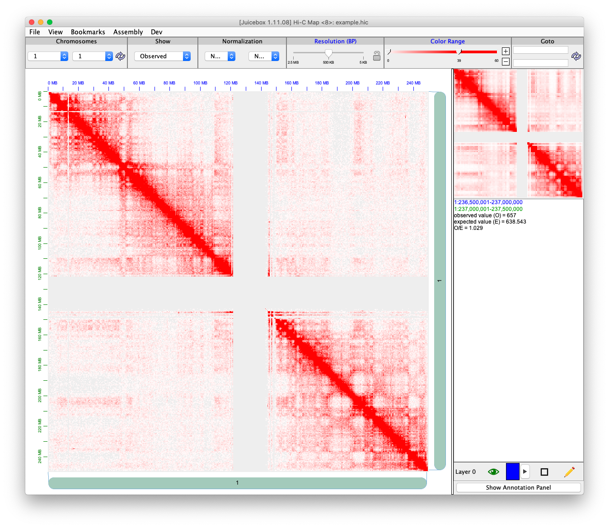

Introduction
FreeHi-C (v2.0) is short for Fragment interactions empirical estimation for fast simulation of Hi-C data. It is a data-driven Hi-C data simulator for simulating and augmenting Hi-C datasets. FreeHi-C employs a non-parametric strategy for estimating an interaction distribution of genome fragments and simulates Hi-C reads from interacting fragments. Data from FreeHi-C exhibit higher fidelity to the biological Hi-C data. FreeHi-C not only can be used to study and benchmark a wide range of Hi-C analysis methods but also boosts power and enables false discovery rate control for differential interaction detection algorithms through data augmentation. Different from FreeHi-C (v1.0), a spike-in module is added enabling the simulation of true differential chromatin interactions.
The fragment level package is available here: YeZheng/FreeHiC
Method
Here is a contact matrix of human genome chromosome 1. All the red dots are contact counts. The X axis and Y axis are sequence indices.

To save this symmetric and sparse matrix, we use \((x, y, \text{count})\), where x and y are location, and count is the number of count in the location.
Then “FreeHiCLite” performs the following procedures to simulate the contact matrix.
Calculate the total number of contact counts \(N = \sum_{ij}n_{ij}\) where \(n_{ij}\) is the contact counts at location \((i, j)\) in the matrix.
Estimate \(\pi_{ij} = \frac{n_{ij}}{N}\). We assume the contact matrix follows a multinomial distribution.
Sample new counts \(\hat{n_{ij}} \sim Binomial(\text{SeqDepth}, \pi_{ij})\). Where
*SeqDepth*is provided by user.Sample a random variable \(r_{\text{noise}}\) from Uniform(0, 1). If \(r_{\text{noise}} \le \text{noiseRate}\), let \(\hat{M_{ij}}\) add or minus one with equal probability. This step is approximate deletion, insertion.
*noiseRate*is provided by user.If user specified
*neighborZeroRate*> 0. Calculate zero rate as \(p_{0} = \sum_{ij}I(n_{ij} = 0) / M^2\), where \(M\) is the number of locations.
For each location \((i, j, n_{ij})\) with \(n_{ij} > 0\), calculate its neighborhood non-zero probability as \(p_{\text{neighbor}} = \frac{2}{|i_{prev} - i| * |j_{prev} - j|}\) (previous closest location, we order all the location based on \(j\) and \(i\)). Then select a random number \(r\). If \(r < p_{\text{neighbor}}\), randomly select an index \((i_{r}, j_r)\) from the whole matrix and assign \(n_{i_rj_r} = 1\). Also let \(n_{ij} = n_{ij} - 1\).
Usage
To fulfill the needs of use FreeHi-C with the processed data, contact matrix. We implement “FreeHiCLite” package, which can use multi-nomial sampling and directly functional on both contact matrix and .hic file directly.
Read a data from a hic file.
localFilePath = system.file("extdata", "example.hic", package = "FreeHiCLite") unit = "BP" resolution = 5000L dat <- readJuicer(file=localFilePath, chromosomes="chr1", pairs = NULL, unit=unit, resolution=resolution) str(dat) #> List of 3 #> $ contact :List of 1 #> ..$ 1_1: int [1:719619, 1:3] 550000 750000 750000 800000 700000 750000 800000 850000 750000 800000 ... #> .. ..- attr(*, "dimnames")=List of 2 #> .. .. ..$ : NULL #> .. .. ..$ : chr [1:3] "x" "y" "counts" #> $ information:List of 4 #> ..$ genomeID : chr "hg19" #> ..$ resolution :List of 2 #> .. ..$ BP : int [1:3] 2500000 500000 5000 #> .. ..$ FRAG: int(0) #> ..$ pairs : chr [1:6] "1_1" "1_2" "1_3" "2_2" ... #> ..$ chromosomeSizes:'data.frame': 26 obs. of 2 variables: #> .. ..$ chromosome: chr [1:26] "1" "10" "11" "12" ... #> .. ..$ size : int [1:26] 249250621 135534747 135006516 133851895 115169878 107349540 102531392 90354753 81195210 78077248 ... #> $ settings :List of 4 #> ..$ unit : chr "BP" #> ..$ resolution : int 5000 #> ..$ chromosomes: chr "chr1" #> ..$ file : chr "/private/var/folders/bb/9m2pjpgj5nq5xft84vmyv7dm0000gn/T/RtmpqraV20/temp_libpath200225e71693/FreeHiCLite/extdata/example.hic" #> - attr(*, "class")= chr [1:2] "juicer" "freehic"
The contact matrix has form
| x | y | counts |
|---|---|---|
| 550000 | 550000 | 2 |
| 750000 | 750000 | 21 |
| 750000 | 800000 | 10 |
| 800000 | 800000 | 60 |
| 700000 | 850000 | 2 |
| 750000 | 850000 | 2 |
FreeHi-C
We can use readJuicer() to extract the data, then perform this simulation.
contacts <- dat$contact seqDepth <- 1000000L countScale <- 0 noiseRate <- 0.2 neighborZeroRate <- 0.1 res <- FreeHiC(contacts, seqDepth, countScale, noiseRate, neighborZeroRate, resolution)
After we perform FreeHiC(), we can visualize the result via juicebox. Here are the following command to use.
writeJuicer(res, 'chr1.txt')
Here our genomeID is hg19.
Here is the simulated matrix.
knitr::include_graphics("simu_chr1.png")

We can also directly use FreeHiCJuicer() to perform simulation directly on the .hic file.
res <- FreeHiCJuicer(file=localFilePath, chromosomes=c("chr1", "chr2", "chr3"), pairs = NULL, unit=unit, resolution=resolution, seqDepth = seqDepth, countScale = countScale, noiseRate = noiseRate, neighborZeroRate = neighborZeroRate)
SpikeIn
The detail of method can be found in: YeZheng/FreeHiC/SpikeIn.
Here FreeSpikeIn() provide a function to add spikein in our contact matrix.
To smooth the spikein signal, we use kdtree2 for fast range based query, and Gaussian kernel smoothing to smooth the neighborhood.
## create a spikeIn rate contactBackground <- contacts[['1_1']] Ns <- 0.1 * NROW(contactBackground) spikeIn <- contactBackground[sample(1:NROW(contactBackground), Ns),] spikeIn[,3] <- spikeIn[,3] * sample(c(seq(0, 1, 0.5), seq(1, 5, 0.5)), Ns, replace = TRUE) spikeInRes <- FreeSpikeIn(contactBackground, spikeIn, kernelSmooth = TRUE, bandwidth = 5000)
writeJuicer(spikeInRes, '1_1', 'chr1_spikein.txt')

We can also perform spikein with FreeHiC().
spikeInFreeHiC <- FreeHiC(spikeInRes, seqDepth = sum(contactBackground[,3]), countScale = 0, noiseRate = 0.5, neighborZeroRate = 0.01, resolution = 5000)
writeJuicer(spikeInFreeHiC, '1_1', 'chr1_spikein_free.txt')

References
- Ye Zheng and Sündüz Keleş. “FreeHi-C simulates high-fidelity Hi-C data for benchmarking and data augmentation.” Nature Methods (2019).
- Neva C. Durand, Muhammad S. Shamim, Ido Machol, Suhas S. P. Rao, Miriam H. Huntley, Eric S. Lander, and Erez Lieberman Aiden. “Juicer provides a one-click system for analyzing loop-resolution Hi-C experiments.” Cell Systems 3(1), 2016.